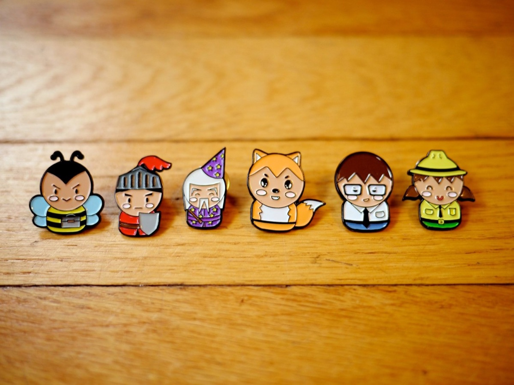
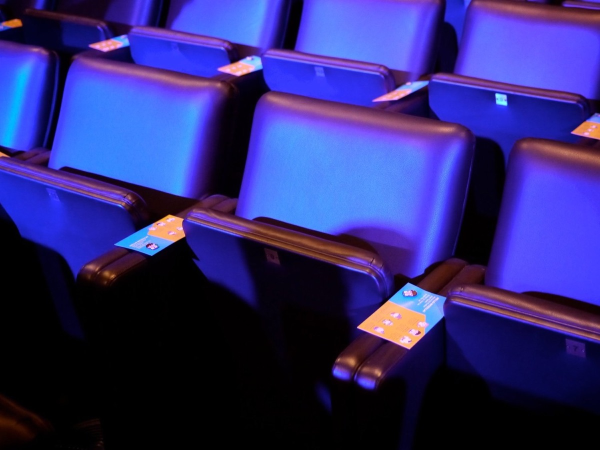
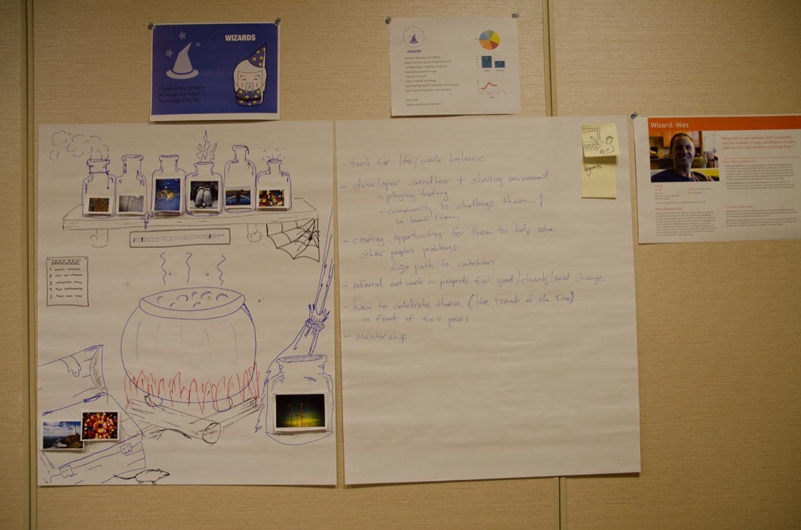
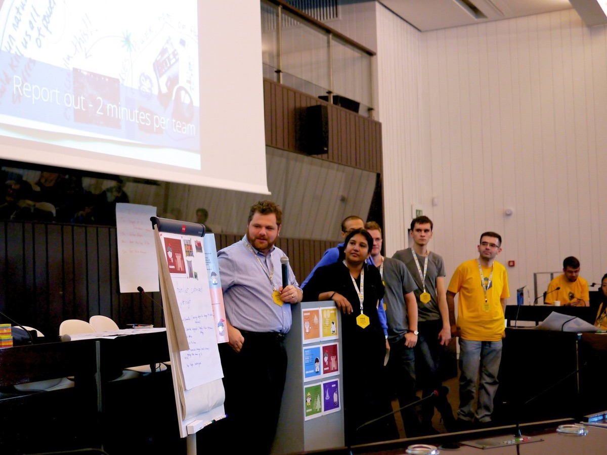

Designing for Our Users, Not for Ourselves
Co-written with Dominik Strohmeier

Brussels Mozilla Summit 2013.
Build. Empower. Teach. Shape. When Mitchell Baker defined the Nature of Mozilla in her keynote at this year's Mozilla Summit, she highlighted these activities to be our main responsibilities as Mozillians.
The User Research team is dedicated to understanding who our users are and how to build products that will meet their needs. Earlier this year we completed the Firefox User Types study as part of this effort. This research has already been used by internal Mozilla teams to think about different features and design solutions for Firefox, and the Summit gave the User Research team the opportunity to share this work with the entire Mozillia community. Our session, "Designing for our users, not for ourselves," was facilitated by Mozilla User Research team members in all three Summit locations: Toronto (Cori Schauer & Gregg Lind), Santa Clara (Bill Selman & Lindsay Kenzig), and Brussels (Gemma Petrie and Dominik Strohmeier). Special thanks to our amazing UR and UX colleagues for their support at each session!

Enamel pins depicting six user types.
Getting Mozillians Excited about User Research
The summit was an awesome experience with more than 1,800 Mozillians across three locations. We were excited to share our work during our UR/UX breakout sessions, but with so many concurrent tracks, we knew not everyone would be able to to attend. In order to convey our enthusiasm for our research, spread the word about our sessions, and get the community talking about who our users are, we created and distributed enamel user type pins to all of the Mozillians in attendance.

The user type pins were distributed just before the Saturday morning keynote talk.
The pins were a hit and within minutes the keynote auditorium was full of Mozillians trying to trade with one another for their favorite user type. Nearly half of our community members fall into the "Wizard" category of users, but in our research this user type only represents 1% of North American Firefox users. We deliberately distributed only a few "Wizard" pins at the Summit in order to get people talking, and did it ever! As people frantically searched for these elusive pins, it gave us the opportunity to discuss the theme of our talk, "Designing for our users, not for ourselves." (Thanks to Zhenshuo Fang for her lovely user types artwork and to Madhava Enros for the pin idea!)

“Wizard” work in Toronto.
Teaching the Community about User Types
The word was out about User Types, and more than 60 Mozillians came to the session in Brussels, 35 in Toronto and 30 in Santa Clara to learn more. During the presentation, we introduced everybody to the concept of having user types to guide our design and product development process. We also introduced each of the user types and their specific characteristics. We then split the room into six groups and each group received a short user profile, a collection of photos, pens, paper, and two exercises:
Review the representative profile - you are now that person. Finish this sentence "To me, the Internet is..." using the photos. Feel free to draw, annotate, or whatever you need to finish the sentence. Once you are done, choose three words that best describe the Internet to you [as the user type].
Now that you know how your user type thinks & feels about the Internet, spend time with your group brainstorming what your user type wishes Firefox could do for them. When done, choose the top three ideas your user type came up with and tell us "I wish Firefox would..."

The “Stalwart” presentation in Brussels at the “Designing for our users, not ourselves” session.
After finishing the exercises, each group presented their results to the other teams. The goal of our session was to make people start thinking like one of our user types and we were incredibly impressed with the thoughtful ideas each group shared. The presentations highlighted an important constraint our designers work with every day: There are very different ideas about the Web and what Firefox could offer each of the user types, however we only develop one Firefox Desktop which needs to serve all of our users.
Thanks to all the Mozillians in the different Summit locations who joined our session. In Brussels, we especially enjoyed the long discussion that followed after the official session ended. We hope that these discussions will continue and that we will all keep the user types in mind when working on future products so that we are better able to build the Internet the world needs. (Special thanks to Cori Schauer for her work preparing this session!)